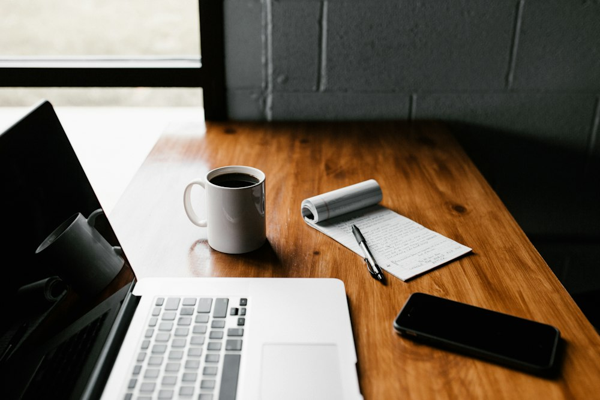

MARÉE 咖啡品牌
MARÉE COFFEE ROASTERSEST. 2025 / HANGZHOU
MARÉESINGLE ORIGIN
01
02
03
把海浪的节奏，装进一只袋子© 2025 林屿
为一家只做单一产地豆的小烘焙坊做的整套识别：字标、包装、名片。三只袋子对应浅、中、深三种烘焙度，颜色从纸袋的暖白一路收到深茄紫。【示例作品，内容为我按行业写的一版示意】
林屿，独立视觉设计师。做品牌识别、编辑设计与数字产品，把复杂的东西排得清楚又好看。
我相信 留白 和一句说清楚的话，比十个花哨的动效更有力量。做设计这五年，我一直在做同一件事：把信息排到它该在的位置，然后 停下来。
选作 / SELECTED WORK
MARÉE 咖啡品牌、《拾光》独立刊物、节气 App、山见民宿识别、白露茶包装、城市展视觉
为一家只做单一产地豆的小烘焙坊做的整套识别：字标、包装、名片。三只袋子对应浅、中、深三种烘焙度，颜色从纸袋的暖白一路收到深茄紫。【示例作品，内容为我按行业写的一版示意】

一本关于手艺人与日常的小刊物，我做版式与封面系统。正文用窄栏、大行距，封面每期只换一个圆形的位置和颜色。【示例作品，内容为我按行业写的一版示意】
把一年切成二十四段，每段给你一句该做的事。没有推送，没有红点。
一个不打扰人的节气日历：一天只显示一个字、一句话。深浅两套配色跟着日出日落切换。【示例作品，内容为我按行业写的一版示意】
关于 / ABOUT
我不太相信「风格」，更相信「合适」。每个项目该长成什么样，藏在它自己的内容里，我要做的是把它找出来，而不是套一个好看的模板。
合作方式很简单：先聊清楚要解决什么，再给两三个方向，定一个做完整。过程里我会把每一版都发给你看，不攒到最后才交。
页面里的三件作品是按设计行业写的一版示意，换成你真实的项目名、图片和介绍就能直接用。
有项目想聊，或者只是想打个招呼，都欢迎写信。
hello@linyu.design（这个邮箱是示例地址，换成你自己的就能收信）